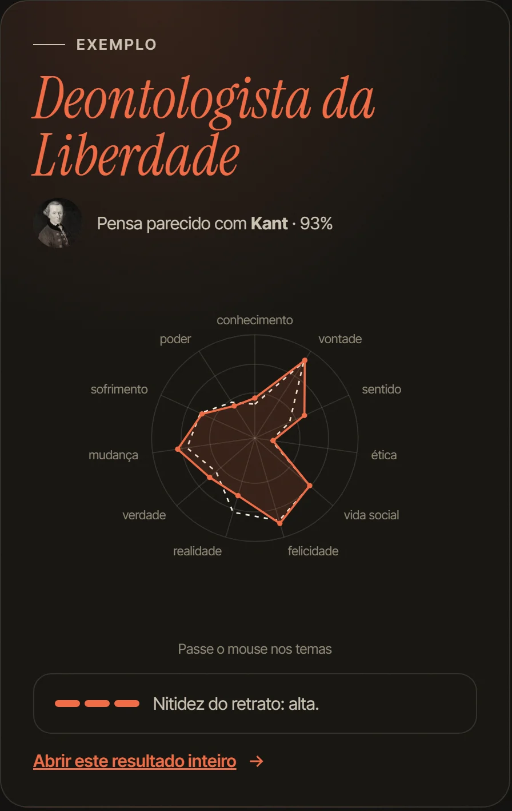
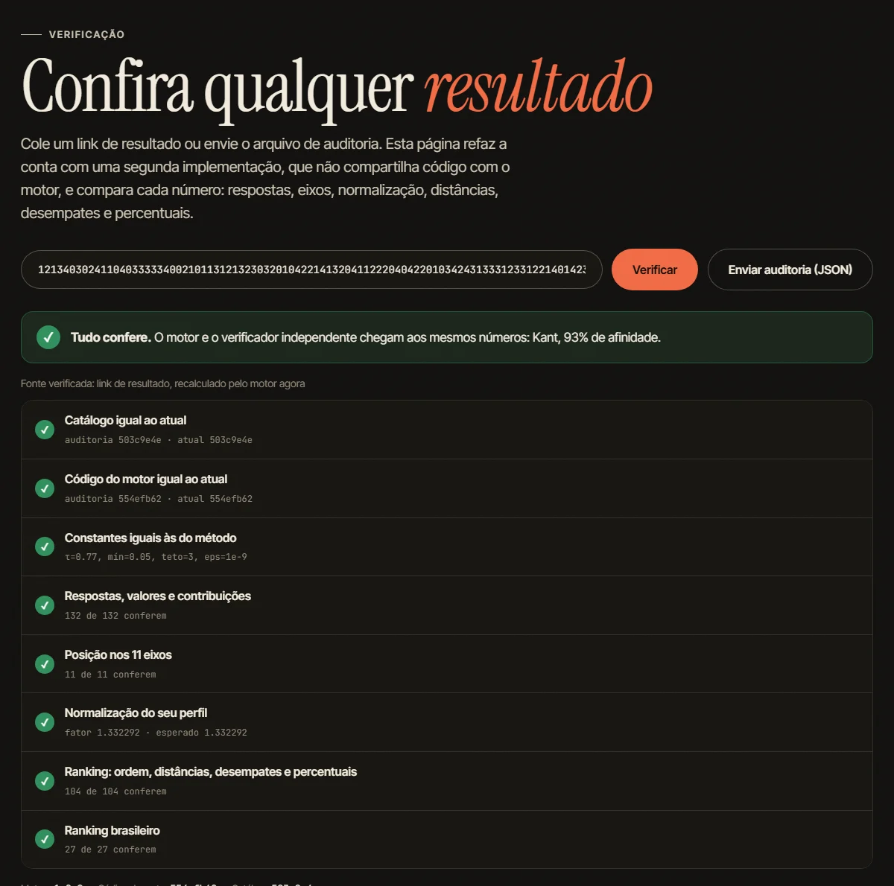

O teste de filosofia que mostra a conta.
O Filosofômetro compara o seu jeito de pensar com o de 104 pensadores do ranking geral e mais os do seu idioma, como Lao Tsé, Kant, Simone de Beauvoir e Ailton Krenak. São 180 no total. Você responde afirmações do dia a dia sobre verdade, liberdade, moral e poder. O motor devolve o seu arquétipo, o pensador mais parecido com você e cada número que levou até ele.
Seu jeito de pensar tem nome. E conta.
Este é o resultado de exemplo que o próprio site mostra, com as 132 afirmações respondidas. Tudo foi calculado pelo mesmo motor que vai ler as suas respostas.

- Seu arquétipo
Um nome para o seu jeito de pensar, formado pelos seus dois lados mais fortes: Deontologista da Liberdade. São mais de 400 combinações possíveis.
- O pensador com o formato mais parecido
A afinidade em porcentagem, os mais parecidos depois dele e onde vocês concordam e discordam, tema por tema.
- Frente a frente
Afirmação do teste:
Mentir é errado, mesmo para salvar alguém.
A sua resposta ao lado do que o pensador diria, em paráfrase.
- Quem mais discordaria de você
O seu oposto no catálogo, com os temas em que vocês mais se afastam.
- Quem pensa como você perto de casa
Um ranking regional: 27 brasileiros em português, 26 do mundo de língua inglesa em inglês e 26 ibero-americanos em espanhol.
- Na história
Uma linha do tempo de 571 a.C. até hoje, com o lugar do seu par e do seu oposto.
- Para mostrar e para discutir
Três cards prontos para o story, um link com prévia e o desafio: um amigo faz o teste e vocês descobrem em quantos dos 11 temas concordam.
- Por onde começar a ler
Três livros de cada pensador, para dar o primeiro passo na leitura, com links de associado da Amazon.
Onze tensões que definem um pensamento.
Cada tema opõe duas respostas legítimas a uma pergunta antiga. Não existe lado certo. O teste mede para onde você puxa, e com que força.
Quatro passos. Nenhuma caixa-preta.
O motor é um arquivo só, engine.js, com funções puras e sem acesso à página. Quem mostra o resultado não calcula nada: só exibe o que o motor devolve.
Você responde
Cada resposta vale de +2 a −2 e é multiplicada pela direção da afirmação. A posição em cada tema é a soma das contribuições dividida pelo máximo possível.
O formato, não a força
O seu perfil e o de cada pensador são ajustados para a mesma intensidade média do catálogo. Assim o teste compara o formato do pensamento, e quem responde com cautela não fica sem par.
A distância
A distância é a média das diferenças nos 11 temas. A afinidade sai de uma curva fixa, a mesma para todos os pensadores.
O ranking
Ordena por distância. Empate de verdade (diferença até 10−9) desempata pela distância bruta e depois pelo identificador (id) do pensador. O mesmo conjunto de respostas sempre dá o mesmo resultado.
Qualquer pessoa confere qualquer resultado.
A página Verificar refaz a conta com uma segunda implementação, verify.js, escrita sem nenhum código em comum com o motor. Ela compara cada número, da primeira resposta ao último percentual.
- Auditoria em JSON em todo resultado, com todos os números em precisão completa. O arquivo basta, sozinho, para refazer o ranking inteiro.
- Duas impressões digitais: uma do catálogo (eixos, afirmações e posições dos pensadores) e outra do código do motor. Se algo mudar, a auditoria mostra.
- Método por escrito no próprio site, com as constantes do cálculo à vista.

Testado para não ter favoritos.
Muito teste de internet acaba mandando quase todo mundo para os mesmos poucos resultados. Aqui, a cada mudança no catálogo ou no motor, uma bateria de verificações confere que isso não acontece.
pensadores vencem quando alguém responde exatamente como eles. Ninguém no catálogo é inalcançável.
é o máximo que um único pensador leva numa simulação de 60 mil pessoas espalhadas por todas as respostas possíveis. O limite do teste é 6%.
Quem concorda com tudo, ou discorda de tudo, cai exatamente no centro dos 11 temas. Inverter todas as respostas inverte todos os temas.
Nos 22 polos, quem puxa forte para um lado recebe um par desse lado em 65% ou mais das vezes.
Nenhuma época é favorecida: Antiguidade, Medieval, Modernidade, Contemporâneos e Oriente aparecem perto do seu peso no catálogo.
O ranking geral dá o mesmo resultado em português, inglês e espanhol, e cada ranking regional é conferido dentro do seu idioma.
Rápido
55%44 afirmações, uns 6 minutos. Mesmo resultado ao refazer em 55% das vezes.
Completo
83%88 afirmações, uns 12 minutos. Mesmo resultado ao refazer em 83% das vezes.
Profundo
94%132 afirmações, uns 18 minutos. Mesmo resultado ao refazer em 94% das vezes.
Cada idioma tem os seus pensadores.
Além dos 104 pensadores do ranking geral, cada idioma traz o seu próprio ranking, com quem pensou perto de quem vai fazer o teste.
Seu jeito de pensar é seu.
O site é estático. O cálculo roda no seu aparelho e nenhuma resposta fica guardada num servidor: não existe banco de dados de respostas.
Sem cadastro
Nem e-mail, nem login. É abrir e responder.
Tudo no navegador
O cálculo roda no seu aparelho. O link de resultado guarda só o código das respostas, que vai ao servidor apenas para montar a prévia, sem ser guardado.
Medição sem cookies
A contagem de visitas não usa cookies e não recebe as suas respostas.
Funciona offline
Dá para instalar como app no celular e usar sem internet depois da primeira visita.
Sem build. Sem banco de dados.
HTML, CSS e JavaScript puro, servidos como arquivos. Só as prévias de link usam duas funções pequenas na Vercel. Dá para rodar na sua máquina em um comando.
data.jso catálogo: temas, afirmações e posições dos pensadores. Só dados.engine.jso motor. Funções puras, com trilha de auditoria.verify.jsa segunda implementação, usada pela página Verificar e pelos testes.app.jsa interface. Não calcula nada.tests/motor, alcance de cada pensador e calibração contra viés.# baixar $ git clone https://github.com/tiagocardosobezerra/filosofometro $ cd filosofometro # rodar em http://localhost:5173 $ npx serve@14.2.4 -l 5173 . # motor e catálogo: 162 verificações $ node tests/engine-test.js 162 passed, 0 failed # todo pensador é alcançável? $ node tests/reachability.js # viés por época, polo e nível: 46 verificações $ node tests/calibration.js
O que o Filosofômetro não é.
Mostrar a conta também é mostrar onde ela para.
- Não é diagnóstico.É um retrato do que você respondeu hoje, sobre 11 temas. Não mede inteligência, caráter nem personalidade.
- As posições dos pensadores são leituras.Resumir um filósofo em 11 números é discutível. As posições passaram por revisão, mas continuam abertas a debate, e estão todas à vista no catálogo.
- O nível Rápido é uma prévia.Com 44 afirmações, o mesmo resultado volta em 55% das vezes. Para um retrato firme, faça o Profundo.
- Os retratos têm licenças diferentes.As imagens vêm da Wikimedia Commons, com crédito. Quem não tem foto livre ganha um retrato desenhado pela própria mandala.
Conhece-te
a ti mesmo.
Uns seis minutos, 44 afirmações e nenhum cadastro. A conta fica com você.